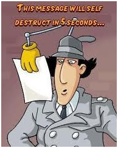

Cal que passats 5 segons de carregar-se la pàgina la imatge que hi ha tot seguit desapareixi. La desaparició serà progresiva modificant la propietat opacity d'aquesta imatge passant del 1 al 0 en els 5 segons.
Millorar l'exercici anterior perquè mentre passen els 5 segons ens mostrin els segons que queden per destruir la imatge.
"Queden X segons per destruir la imatge", o bé, passats els segons, "la imatge ha estat destruida"